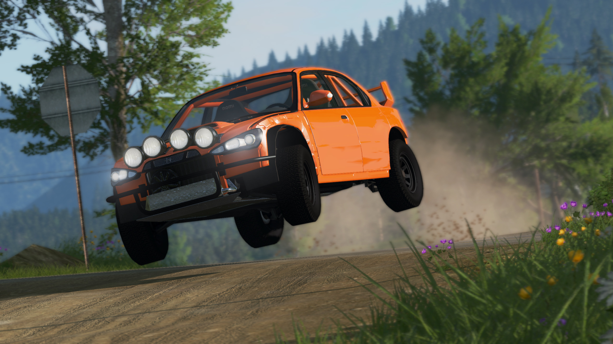
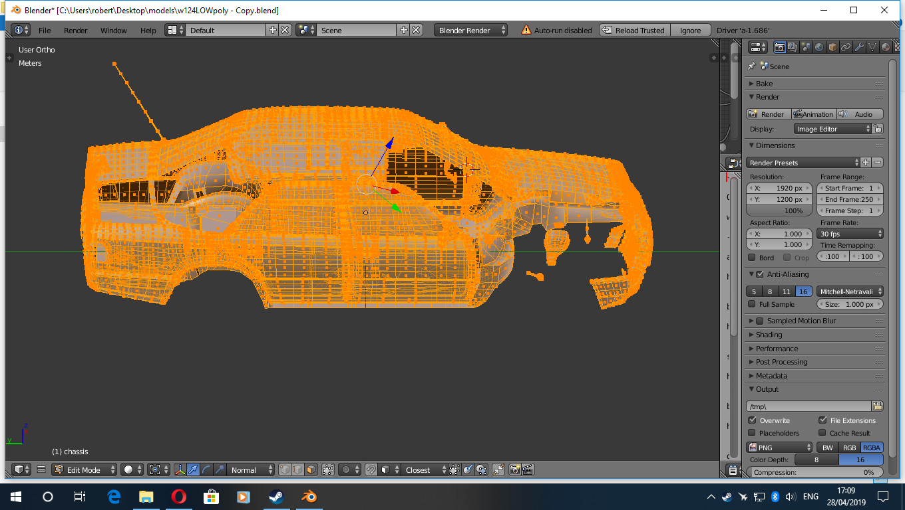

BeamNG.drive is a more realistic addition to the vehicle and sandbox simulation genres, offering players an unparalleled freedom experience in the world of vehicular physics and destruction. Developed by BeamNG GmbH, this game diverges from traditional racing-oriented simulations and instead places emphasis on the realistic simulation of vehicle dynamics and collisions. It's not your typical racing game, but rather a virtual automotive playground that allows players to experiment with countless scenarios and experience the joys and devastations of vehicular interactions.
The core of BeamNG.drive's appeal lies in its remarkably detailed and advanced physics engine. Every vehicle in the game behaves with a sense of realism that is unmatched in the genre. Whether you're trying to navigate a tight corner, perform a power slide, or engage in a high-speed collision, the physics engine accurately captures the nuances of vehicle movement, weight distribution, and deformation. This opens up a world of possibilities for players who enjoy testing the limits of vehicle behaviour.
One of the standout features is the game's "Soft-body Physics," which simulates the deformation of vehicles in a dynamic and responsive manner. Crashes and collisions look and feel shockingly realistic, making each accident an engrossing spectacle in its own right. The damage model and the way cars crumple and break apart are particularly impressive, giving players a chance to witness the chaos of automotive destruction up close.
While BeamNG.drive doesn't offer traditional racing circuits or structured campaigns, it makes up for this by providing an extensive set of user-created scenarios and a robust vehicle customization system. The game is essentially a sandbox, and players can construct their own challenges, scenarios, and environments, fostering creativity and experimentation. The modding community is vibrant, and there's a steady stream of user-generated content that ranges from elaborate obstacle courses to intricate recreations of real-world locations.
Graphically, BeamNG.drive presents a mix of strengths and weaknesses. The vehicles themselves are detailed and well-designed, showcasing an impressive level of realism. Environments, on the other hand, can sometimes lack the same level of detail and polish. The lighting and weather effects contribute to the overall visual appeal, but they may not be at the cutting edge of modern gaming visuals.
The audio design is solid, with engine sounds that match the behaviour of the vehicles accurately. The crunching of metal and the shattering of glass during collisions add an immersive layer to the overall experience.
BeamNG.drive caters to a specific niche of gamers who are intrigued by the physics and mechanics of vehicles, as well as those who enjoy creative experimentation and the art of vehicular destruction. While it lacks traditional racing elements, it compensates with unparalleled attention to detail in its physics simulation. The game's sandbox nature and robust modding community ensure that its longevity remains intact, as new content continues to be created by the community. If you're seeking a different kind of driving experience that focuses on the intricacies of vehicle dynamics and the thrill of chaotic collisions, BeamNG.drive is well worth a spin.
Explanation of Jbeam: JBeam is the underlying framework in BeamNG.drive that simulates soft body physics. It represents vehicles as interconnected nodes and beams, allowing for realistic deformation and interaction. Here's a concise explanation of how it works:
Nodes and Beams: The vehicle's structure is divided into nodes (points in space) and beams (connectors between nodes). Nodes are like the corners of a 3D mesh, and beams are the lines connecting them. These nodes and beams form the flexible structure of the vehicle.
Physics Simulation: When external forces like collisions, acceleration, or braking are applied to the vehicle, the nodes and beams respond accordingly. Beams can stretch, compress, and bend, while nodes move in response to the applied forces.
Stress and Deformation: Each beam has properties like length, stiffness, and strength. These properties determine how much stress a beam can handle before it deforms or breaks. Deformation happens gradually, affecting neighbouring nodes and beams, creating a realistic crumpling effect during collisions.
Realism and Complexity: The JBeam system accounts for factors like material properties, collision points, and forces acting on the vehicle. The interplay of these elements creates complex deformations that mimic real-world physics.
Flexibility and Diversity: JBeam allows for a wide range of vehicles, from sturdy trucks to delicate cars, each with different deformations based on their structures and properties.
Performance Considerations: Achieving real-time soft body physics involves a trade-off between accuracy and computational efficiency. Complex interactions can strain computer resources, so game developers optimise JBeam to provide a balance between realism and smooth gameplay.
In essence, JBeam's soft body physics goes beyond traditional rigid body simulations, offering a more lifelike representation of vehicle behaviour and damage. It's a core aspect of what sets BeamNG.drive apart and contributes to the game's unique focus on vehicular dynamics and collisions.
Comment Section
F1maniac34: This game is amazing! I love cars, and physics, what more do i need.★★★★★ (5/5)
Username 4: Hello, I think the game is pretty fun. ★★★★☆ (4/5)
RUberRacER Only complaint is i wanted more traditional courses, totally agree PPR. #shout me out plz. ★★★★☆ (4/5)